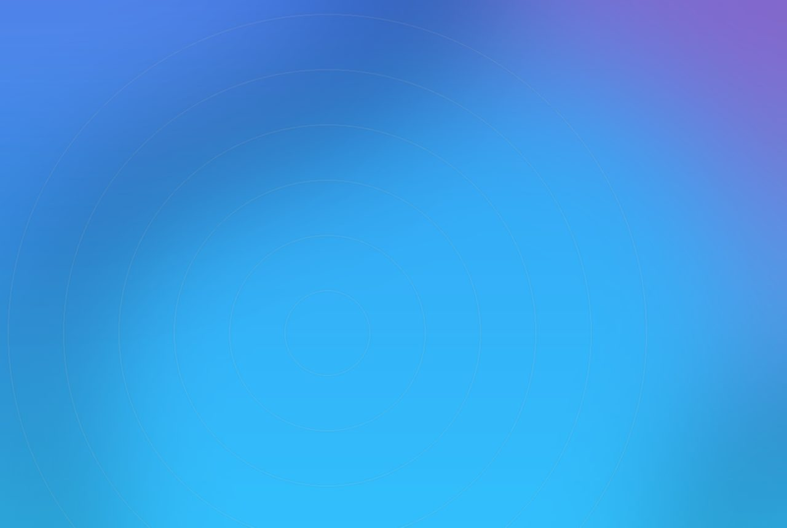

Claire's put oversized earrings that pierce the frame on a New York board. The craft is tying the illusion to one product truth.
Claire's has turned a New York billboard into a canvas for oversized 3D earrings, using anamorphic forced perspective rather than product photography. On the board, a gold hoop appears to curl off one corner, a star stud floats mid-air, a stone glints near the top and a drop earring hangs off the edge and sways as a real earring would. Behind them the phrase pierced at Claire's repeats in soft layered type before resolving, bold and clear, in the centre. The billboard is part of a wider piercing-brand refresh that Claire's has aimed at Gen Alpha, launched alongside a new logo and identity earlier in 2026.
Wearing the product instead of showing it
The real signal is a retailer treating the street as a stage rather than a poster site. Instead of a hero shot of the range, the board wears the jewellery, the earrings appear to pierce the frame itself, which turns the medium into the message. Anamorphic out-of-home has spent a few years as spectacle for its own sake; here it is doing a specific job, dramatising a single product truth that a flat layout could not.
That is a useful correction. Faux-3D and forced-perspective builds are cheap to do badly and expensive to do well, and most fail because the illusion is the whole idea. Claire's tied the effect to one clear line, pierced at Claire's, so the trick serves the claim. The layered, repeating type doing the talking is a quieter craft choice than the floating earrings, and it carries the brand.

How to brief one that earns its place
If a client wants an anamorphic board, start from the product truth, not the effect. Decide the one thing the illusion has to prove, a piercing, a pour, a fit, and design the forced perspective around it. Specify the viewing angle the art is built for, because anamorphic only reads from a designed vantage; commit to that spot and light the composition for it. Then pressure-test the idea flat: if the layout still communicates without the 3D, the 3D is decoration. If it collapses, the effect is doing real work.
For an experiential toolkit, anamorphic out-of-home belongs with projection mapping and spatial illusion, a way to make a two-dimensional surface read as depth for a specific audience position. The production discipline is the same: model the scene, lock the vantage, and render for the exact pixel pitch and aspect of the board. Get those right and a standard billboard behaves like a window. Our retail activation kit treats the storefront and the street board as one continuous surface.
SensaLab builds these anamorphic and spatial pieces for agencies and retail brands under their own name, the modelling, the vantage maths, the render for the exact board, and stays out of the case study. If your next campaign needs a street that appears to hold your product, we can make the illusion behave.